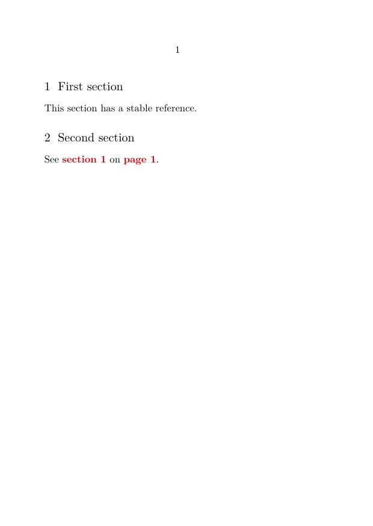

Bibliography and citations in ConTeXt · Overview · Guide 1 · Guide 2 · Guide 3 · Guide 4 · Manual bibliography with simplebib · Cross Referencing module
🚧 This page is under revision. It documents a specialized third-party module. Test the examples with the version installed in your current ConTeXt distribution.
Third-party module — not the built-in ConTeXt reference system
This page documents the third-party crossref module and its
\crossref command.
ConTeXt and LuaMetaTeX already provide their own mechanisms for named
references, structural references, page references, and interactive PDF
links. The crossref module adds a specialized interface for
composing the visible form of a reference.
It should therefore be understood as an additional presentation layer, not as the foundation of cross-referencing in LMTX.
Contents
- 1 1. Purpose and scope
- 2 2. Installation with LMTX
- 3 3. What LMTX already provides
- 4 4. Do not confuse three meanings of “cross-reference”
- 5 5. Module-specific terminology: internal and external
- 6 6. Minimal module example
- 7 7. Syntax of crossref
- 8 8. Anatomy of a composed reference
- 9 9. More reference examples
- 10 10. Configure prefixes and suffixes
- 11 11. Distinguish reference types visually
- 12 12. Reference colours
- 13 13. Language-dependent text
- 14 14. Relation to simplebib
- 15 15. A complete module example
-
16
16. Common mistakes
- 16.1 16.1. Assuming crossref is the ConTeXt reference system
- 16.2 16.2. Confusing module external references with external documents
- 16.3 16.3. Confusing the module with a bibliographic crossref field
- 16.4 16.4. Treating a text reference as bibliographic data
- 16.5 16.5. Loading simplebib when only crossref is required
- 16.6 16.6. Using old module download instructions
- 16.7 16.7. Assuming old presentation settings are guaranteed forever
- 17 17. Diagnostic checklist
- 18 18. What this page has established
- 19 19. Related pages
1. Purpose and scope
References in a scholarly document may point to many kinds of objects:
- another chapter or section;
- a figure, table, or numbered item;
- a page;
- a named location in the document;
- a manually identified documentary or bibliographic source.
ConTeXt already provides a built-in reference mechanism for the first kinds of references.
The crossref module provides an additional command:
\crossref
for constructing references whose visible form may contain:
- text before or after the reference;
- a label;
- a reference value;
- a detail such as a page number;
- configurable prefixes and suffixes;
- distinct visual treatment for module-defined reference types.
What the module adds
ConTeXt already knows how to create, resolve, and interact with references.
The crossref module adds a specialized interface for composing
how such a reference is presented: labels, details, surrounding text,
configurable markers, and colours.
The distinction between the underlying reference and its visible presentation is important.
2. Installation with LMTX
crossref is distributed as a third-party ConTeXt module rather
than as part of the core reference interface.
With a current LMTX installation, available modules can be listed with:
mtxrun --script install-modules --list
Install the module with:
mtxrun --script install-modules --install crossref
For a project that also uses simplebib, both modules can be
installed together:
mtxrun --script install-modules --install crossref simplebib
Then load the module in a document with:
\usemodule[crossref]
Do not use the obsolete download instructions
Older versions of this page referred readers to a separate ZIP archive on an external website. With LMTX, use the current ConTeXt module installer instead.
Because this is a third-party module with historical documentation, test the features you depend on after updating ConTeXt or the module.
3. What LMTX already provides
Before using the module, it is useful to distinguish it from ConTeXt's own reference system.
ConTeXt can associate stable names with structural elements and other document locations. References can then be resolved elsewhere in the document.
A small built-in example is:
-
\setupinteraction [state=start] \setuppapersize[A6] \starttext \startsection [title={First section}, reference={sec:first}] This section has a stable reference. \stopsection \startsection [title={Second section}] See \in{section}[sec:first] on \at{page}[sec:first]. \stopsection \stoptext
-

Here:
-
reference={sec:first}creates a stable structural reference; -
\inrefers to the numbered object; -
\atrefers to its page; -
\setupinteraction[state=start]enables interactive PDF links.
ConTeXt also provides commands such as:
\reference \textreference \in \at \about
for different reference tasks.
LMTX does not require crossref for cross-references
The crossref module is optional.
For ordinary references to chapters, sections, figures, tables, pages, and other structured document objects, first consider the built-in ConTeXt reference commands.
See also:
4. Do not confuse three meanings of “cross-reference”
The word cross-reference occurs in several different contexts.
Three different mechanisms
- A normal ConTeXt cross-reference links one document location or structural object to another.
-
The third-party
crossrefmodule provides the\crossrefcommand documented on this page. -
A bibliographic
crossreffield may describe a relationship between bibliographic records in a structured bibliography.
These mechanisms are conceptually different and should not be identified with one another.
In particular:
ConTeXt reference system
|
| optional presentation interface
v
third-party crossref module
|
| used as a reference mechanism by
v
simplebib module
The modern BTX bibliography system is a separate bibliography architecture.
5. Module-specific terminology: internal and external
The module distinguishes reference types with the parameter:
type=internal
or:
type=external
These names are module-specific.
In the historical design of the module:
-
internalis normally used for references presented as references to objects within the document; -
externalis normally used for source-like references, for example an identifier displayed like a bibliographic reference.
Important terminology warning
type=external does not by itself mean “a PDF link to another
document” or “a URL”.
It selects the module's external reference presentation.
Do not confuse this terminology with ConTeXt's general mechanisms for references between separate documents.
For example, the historical module convention may visually distinguish:
| Reference purpose | Traditional presentation | Alternative presentation |
|---|---|---|
| Source identifier | [XYZ]
|
↑XYZ
|
| Source identifier with detail | [XYZ, p. 23]
|
↑XYZ, p. 23
|
| Internal figure | Figure 2.2
|
↗Figure 2.2
|
| Internal section | Section 3.1
|
↗Section 3.1
|
The arrows are configurable printed markers. They are not themselves what makes a PDF reference interactive.
6. Minimal module example
The following example demonstrates the module without introducing colours or advanced formatting.
-
\usemodule[crossref] \setupinteraction [state=start] \setuppapersize[A6] \starttext \textreference[ref1]{1.1/3} The reference value is \crossref[ref1]. With additional presentation: \crossref [type=internal, left={(}, label={Section }, right={)}] [ref1]. \stoptext
-

The underlying target is created with:
\textreference[ref1]{1.1/3}
The module then constructs a visible reference with:
\crossref[ref1]
or with additional parameters:
\crossref [type=internal, left={(}, label={Section }, right={)}] [ref1]
Separate target creation from reference presentation
The target exists independently of the visual form produced by
\crossref.
This is the same general design principle found throughout ConTeXt: stable references and their presentation are related, but they are not the same thing.
7. Syntax of crossref
The module provides two principal forms:
\crossref[reference]
and:
\crossref [options] [reference]
The historical module interface provides options including:
| Option | Purpose |
|---|---|
type
|
Selects the module-defined reference type: internal, external, or none.
|
left
|
Text placed before the composed reference. |
right
|
Text placed after the composed reference. |
label
|
A descriptive label such as “Figure”, “Section”, or an abbreviation. |
detail
|
Additional information, for example a page number or page range. |
The second argument is the stable reference identifier:
[ref1]
Thus:
\crossref [type=external, detail={p. 23}] [ref2]
combines the reference identified by ref2 with the module's
external-reference presentation and the supplied detail.
8. Anatomy of a composed reference
A visible reference can contain several distinct parts.
A useful conceptual model is:
left
module prefix
label
reference
detail
module suffix
right
For example:
(nach [Zen12, p. 23] und weitere)
may be understood as:
| Part | Example |
|---|---|
left
|
(nach
|
| module prefix | [
|
| reference | Zen12
|
detail
|
p. 23
|
| module suffix | ]
|
right
|
und weitere)
|
Command options and module text settings are different
Values such as left, right, label,
and detail can be supplied to an individual
\crossref call.
Reference prefixes and suffixes such as internalPrefix and
externalPrefix are configured separately with
\setupcrossreftext.
9. More reference examples
Create two demonstration targets:
\textreference[ref1]{1.1/3} \textreference[ref2]{Zen12}
A plain reference:
\crossref[ref1]
An internal-style reference with label and surrounding punctuation:
\crossref [type=internal, left={(}, label={Section }, right={)}] [ref1]
A source-style reference with a detail:
\crossref [type=external, detail={p. 23}] [ref2]
A reference embedded in explanatory text:
\crossref [type=external, left={(see }, right={ for further discussion)}, detail={pp. 32-33}] [ref2]
This is a reference demonstration, not a bibliography database
A construction such as:
\textreference[ref2]{Zen12}
only creates a reference target whose displayed value is
Zen12.
It does not create structured bibliographic data.
For a manual bibliography interface built on this module, see Creating a flexible manual bibliography with simplebib.
For structured bibliographic data, see Guide 1 — Creating a bibliography and citing sources.
10. Configure prefixes and suffixes
The module provides configurable text surrounding internal and external references.
For example:
\setupcrossreftext[internalPrefix={}] \setupcrossreftext[internalSuffix={}] \setupcrossreftext[externalPrefix={[}] \setupcrossreftext[externalSuffix={]}] \setupcrossreftext[refDetailDivider={\textcomma\space}]
With this configuration, an external-style reference may be presented in square brackets.
For example:
[Zen12, p. 23]
11. Distinguish reference types visually
The historical module documentation proposes an alternative presentation in which arrows distinguish the two module-defined reference styles.
Configure:
\setupcrossreftext[internalPrefix={↗}] \setupcrossreftext[internalSuffix={}] \setupcrossreftext[externalPrefix={↑}] \setupcrossreftext[externalSuffix={}]
This can produce forms such as:
↗Figure 2.2 ↑Zen12 ↑Zen12, p. 23
The arrows are typographical markers
The characters ↗ and ↑ are part of the printed
presentation configured by the module.
They should not be confused with the interactive link itself.
PDF interaction is controlled by ConTeXt, for example with:
\setupinteraction [state=start]
12. Reference colours
The historical module interface provides three colour parameters:
-
refColor— general colour of the composed reference; -
reffixColor— colour used for reference prefixes and suffixes; -
refrefColor— colour used for the central reference portion and its detail.
For example:
\definecolor[referencegreen][g=.55] \definecolor[referenceblue][b=.7] \definecolor[referencered][r=.75] \setupinteraction [state=start, style=normal, color=referencered, contrastcolor=referencered] \usemodule[crossref] [refColor=referencegreen, reffixColor=referenceblue, refrefColor=referencered]
Version-dependent presentation
These colour parameters belong to the third-party module.
If they are not recognized, or if interactive PDF colouring differs from the expected result, check the installed module version and test the behaviour with the current LMTX release.
The module's colours and ConTeXt's interaction colours may both contribute to the final appearance.
13. Language-dependent text
The module provides configurable language-dependent text.
General form:
\setupcrossreftext [language] [key={text}]
Examples from the historical module configuration include:
\setupcrossreftext[de][atpageLeft={ auf Seite }] \setupcrossreftext[de][atpageRight={}] \setupcrossreftext[en][atpageLeft={ on page }] \setupcrossreftext[en][atpageRight={}] \setupcrossreftext[ru][atpageLeft={ на странице }] \setupcrossreftext[ru][atpageRight={}] \setupcrossreftext[uk][atpageLeft={ на сторінці }] \setupcrossreftext[uk][atpageRight={}]
The historical documentation also uses:
\setupcrossreftext[cz][atpageLeft={ na straně }] \setupcrossreftext[cz][atpageRight={ }]
Historical language keys
The language keys shown above belong to the module's historical configuration.
In particular, do not silently replace the module's cz key with
another language identifier without first checking the installed module
source and testing the result.
Changing these texts affects the presentation of references. It does not change the stable reference identifiers.
14. Relation to simplebib
The simplebib module uses crossref as its reference
mechanism.
For example, simplebib provides the bibliography-oriented command:
\bibref[brk]
and a form with an additional detail:
\bibref [detail={p. 38}] [brk]
These provide a more convenient interface when the target is a manually constructed bibliography item.
Conceptually:
crossref module
|
v
reference formatting and linking
|
v
simplebib
|
v
manual bibliography interface
Use the interface appropriate to the task
For ordinary simplebib citations, use \bibref.
Use \crossref directly when you need the lower-level presentation
features of the Cross Referencing module.
For modern structured bibliographies, use ConTeXt's BTX system instead.
See:
15. A complete module example
The following example combines interaction, internal-style references, source-style references, details, and configurable prefixes.
-
\usemodule[crossref] \setupinteraction [state=start] \setuppapersize[A5] \setupbodyfont [libertinus,10pt] \setupcrossreftext [internalPrefix={↗}] \setupcrossreftext [internalSuffix={}] \setupcrossreftext [externalPrefix={↑}] \setupcrossreftext [externalSuffix={}] \starttext \subject{Reference targets} \textreference[ref:section]{2.4} The first target represents a document location. \blank \textreference[ref:source]{Zen12} The second target represents a source-like identifier for demonstration purposes. \subject{References} Internal-style reference: \crossref [type=internal, label={Section }] [ref:section]. Internal-style reference with surrounding text: \crossref [type=internal, left={(see }, label={Section }, right={)}] [ref:section]. Source-style reference: \crossref [type=external] [ref:source]. Source-style reference with detail: \crossref [type=external, detail={p. 23}] [ref:source]. Source-style reference in a phrase: \crossref [type=external, left={(see }, right={ for discussion)}, detail={pp. 23-25}] [ref:source]. \stoptext
-

Compile the example and verify that:
- both reference identifiers resolve;
- internal and external module styles are visually distinguishable;
- the detail appears with the source-style reference;
-
leftandrightsurround the complete reference; - interactive links are active when supported by the reference target and PDF interaction;
- the arrows are presentation markers rather than the underlying link mechanism.
16. Common mistakes
16.1. Assuming crossref is the ConTeXt reference system
Incorrect assumption:
I need the crossref module whenever I want to refer to a section or figure.
For ordinary structural references, ConTeXt's native reference system is normally sufficient.
Use the module when its additional reference-composition interface is useful.
16.2. Confusing module external references with external documents
The setting:
type=external
selects a module-defined reference style.
It does not automatically make the target a separate PDF, website, or external document.
16.3. Confusing the module with a bibliographic crossref field
A bibliographic field named:
crossref
belongs to bibliographic data modelling.
The command:
\crossref
belongs to this third-party reference module.
They are unrelated mechanisms.
16.4. Treating a text reference as bibliographic data
This:
\textreference[source]{Zen12}
creates a reference target.
It does not create author, title, publisher, year, or other bibliographic metadata.
Use simplebib for a small manually constructed bibliography or
BTX for structured bibliographic data.
16.5. Loading simplebib when only crossref is required
If the document uses only:
\crossref
load:
\usemodule[crossref]
There is no need to load simplebib unless its bibliography
interface is required.
16.6. Using old module download instructions
Do not rely on historical third-party ZIP links copied from old versions of this page.
With LMTX, use:
mtxrun --script install-modules --install crossref
16.7. Assuming old presentation settings are guaranteed forever
The module has existed for a long time and some documentation reflects older ConTeXt releases.
When relying on colours, language texts, or specialized presentation options, compile a small test with the module installed in the current LMTX release.
17. Diagnostic checklist
If a reference does not behave as expected, check:
-
whether
crossrefis installed; -
whether
\usemodule[crossref]is present; - whether the target reference exists;
- whether the spelling and capitalization of the reference identifier match;
- whether the desired behaviour actually requires this module rather than a built-in ConTeXt reference command;
-
whether
type=internal,external, ornoneis appropriate for the intended module presentation; -
whether
left,right,label, anddetailare balanced correctly; -
whether
\setupinteraction[state=start]is enabled when interactive PDF behaviour is expected; - whether custom prefix and suffix settings are producing the intended visible form;
- whether module-specific colour settings still behave as expected with the installed version;
- whether language-dependent text keys are supported by the installed module;
-
whether a bibliography task would be better handled by
simplebibor the modern BTX system.
18. What this page has established
The crossref module is an optional presentation interface built
on top of reference mechanisms available to a ConTeXt document.
The essential workflow is:
create or identify a reference target
|
v
choose a stable reference identifier
|
v
load the crossref module
|
v
compose the visible reference with \crossref
|
+---- type
+---- label
+---- detail
+---- left / right
|
v
optionally enable PDF interaction
The most important distinctions are:
| Mechanism | Purpose |
|---|---|
| Built-in ConTeXt references | Create and resolve structural, textual, page, and other document references. |
crossref module
|
Adds a specialized interface for composing the visible form of references. |
simplebib
|
Uses the module mechanism for a manually constructed bibliography interface. |
| BTX | Provides structured bibliographic data, citation alternatives, datasets, and bibliography renderings. |
Bibliographic crossref data
|
Expresses a relationship between bibliographic records; unrelated to the module command. |
A useful mental model is:
ConTeXt / LMTX
|
built-in reference mechanism
|
+---------+---------+
| |
ordinary references crossref module
|
simplebib
BTX bibliography system
|
+-- datasets
+-- citations
+-- renderings
+-- bibliographic record relationships
19. Related pages
19.1. Bibliography and citations
- Bibliography and citations — Overview
- Guide 1 — Creating a bibliography and citing sources
- Guide 2 — Understanding datasets, styles, renderings, selection, and sorting
- Guide 3 — Creating local and multiple bibliographies
- Guide 4 — Organising bibliographies in complex editorial projects
- Creating a flexible manual bibliography with simplebib
- Bibliography-related commands
19.2. Built-in ConTeXt reference commands
19.3. Modules and project mechanisms
- Original Simple Bibliography module documentation
- ConTeXt modules
- Project structure
- References, notes and floats
19.4. External module information
- ConTeXt Modules
- Installing ConTeXt modules
- Complete module list — see Cross Referencing and Simple Bibliography